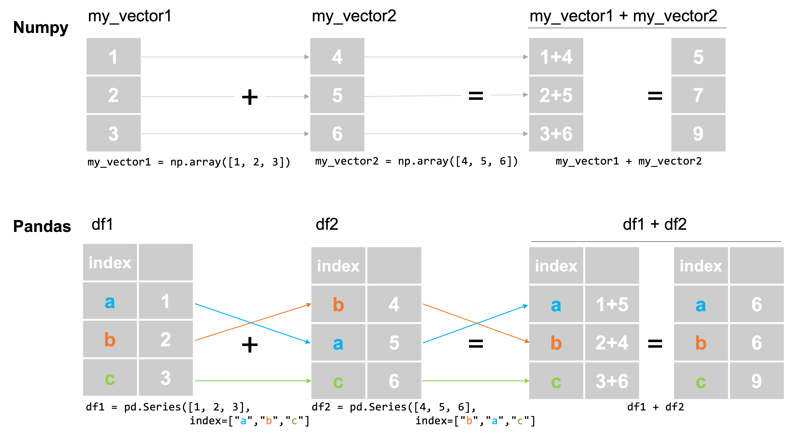

Pandas Indices (Index Labels)#
One of the defining features of pandas data structures is that all rows and columns come with labels. Index labels (the labels assigned to rows of the data) are always present in both Series and DataFrames and can be accessed through the .index attribute (e.g., my_dataframe.index), and column labels are always present in DataFrames and can be accessed through the .columns attribute (e.g., my_dataframe.columns).
The existence of column names, I think most people would agree, is an unequivocal strength of pandas — it makes it easy to remember the substantive meaning of the different variables in your data, and to write code that very explicitly states what variables are being manipulated (as opposed to working with column numbers, as one does with numpy).
The value of all pandas rows having index labels, however, is less clear. Actually, strike that. We’re comfortable saying that the fact all pandas rows come with index labels is one of the most confusing and least useful features of pandas. And so in this reading, while we will review the basics of how these index labels work, we our primary focus will actually be to help you learn how to prevent them from getting in the way.
This is, admittedly, a very opinionated take on index labels, but I think that the fact that pandas is the only tabular data library we know of that has this feature — including many libraries developed since pandas that could have adopted this approach if they’d wanted — is illustrative of the fact that most people don’t see this as a particularly valuable addition to tabular data structures like Series and DataFrames.
Vocabulary, A Review#
As noted in our readings on Series and DataFrames, in this course we will try to always make use of two distinct terms for the different ways to identify rows in a pandas data structure:
Index labels: these are labels for rows that can be accessed through the
.indexattribute (e.g.,my_series.index). To access a row using index labels, one uses the.loc[]operator. Note that what we call index labels are usually just referred to as the “index” in most documentation about pandas.Row numbers: these are the numbers one would naturally assign to the rows of a Series or DataFrame based on the relative order in which they appear, starting with row 0 (since this is Python), then moving to row 1, row 2, etc. These row numbers operate the same way row numbers operate in numpy (or in other languages, like R, Julia, Java, etc.), and you can access rows by row number using
.iloc[].
While these seem like obviously distinct concepts in the abstract, things quickly become confusing because the default index labels pandas assigns to rows is… their row numbers. 🤦♂️ As a result, when you load a new dataset, if you don’t set the index explicitly, each row’s index labels and row numbers will be the same:
import pandas as pd
small_world = pd.read_csv("data/world-very-small.csv")
small_world
| country | region | gdppcap08 | polityIV | |
|---|---|---|---|---|
| 0 | Brazil | S. America | 10296 | 18 |
| 1 | Germany | W. Europe | 35613 | 20 |
| 2 | Mexico | N. America | 14495 | 18 |
| 3 | Mozambique | Africa | 855 | 16 |
| 4 | Russia | C&E Europe | 16139 | 17 |
| 5 | Ukraine | C&E Europe | 7271 | 16 |
Here, for example, Mexico’s index label is 2:
small_world.loc[2, :]
country Mexico
region N. America
gdppcap08 14495
polityIV 18
Name: 2, dtype: object
And its row number is 2:
small_world.iloc[2, :]
country Mexico
region N. America
gdppcap08 14495
polityIV 18
Name: 2, dtype: object
But the fact that index labels and row numbers start off as being the same does not mean they are guaranteed to stay that way. That’s because when one sorts a Series or DataFrame, index labels stay with the observation with which they were originally associated, while row numbers always depend on the relative order in which observations appear.
Thus if I sort our DataFrame by GDP per capita (thus shuffling the order of rows), you will see that index label 2 has followed Mexico to the fourth row (row number 3, since we count from 0):
sorted_small_world = small_world.sort_values("gdppcap08")
sorted_small_world
| country | region | gdppcap08 | polityIV | |
|---|---|---|---|---|
| 3 | Mozambique | Africa | 855 | 16 |
| 5 | Ukraine | C&E Europe | 7271 | 16 |
| 0 | Brazil | S. America | 10296 | 18 |
| 2 | Mexico | N. America | 14495 | 18 |
| 4 | Russia | C&E Europe | 16139 | 17 |
| 1 | Germany | W. Europe | 35613 | 20 |
This illustrates a key feature of index labels: in that they stay with a given observation regardless of how the data is sorted, they are like any other column of the DataFrame. The only difference is that the syntax for manipulating DataFrames using the index labels is different from the syntax for other columns. Want to sort by any column other than the index? Use .sort_values("name_of_column"). Want to sort by the index labels? .sort_index(). Want to get rows where the column polityIV == 16? small_world[small_world.polityIV == 16]. Want to get the rows where the index is equal to 16? small_world.loc[16].
And that, in a nutshell, is the problem: index labels make one column of data special, and in the process, it forces users to write code to access that column in a manner that’s different from any other column. And for nearly all use cases, for no good reason (we’ll touch on the “why” argument defenders of index labels would make below).
A Minimalist Strategy for Working with Index Labels#
The best advice we can give you for working with index labels is to ignore them whenever you can, and if you do happen to need the data in index labels, just copy the data in your index labels over into a normal column and work with it as you would any other variable.
To illustrate, suppose you have a dataset with data you actually care about stored as index labels. This can happen — even if you don’t want it to! — as a side effect of some functions we will learn about next week (like .groupby() or .pivot()). To illustrate, though, we will just force pandas to use the GDP per capita column as the index when we load our data using the index_col argument:
world_data_in_index = pd.read_csv("data/world-very-small.csv", index_col="gdppcap08")
world_data_in_index
| country | region | polityIV | |
|---|---|---|---|
| gdppcap08 | |||
| 10296 | Brazil | S. America | 18 |
| 35613 | Germany | W. Europe | 20 |
| 14495 | Mexico | N. America | 18 |
| 855 | Mozambique | Africa | 16 |
| 16139 | Russia | C&E Europe | 17 |
| 7271 | Ukraine | C&E Europe | 16 |
Obviously, GDP per capita is data we will probably want to use, so we want to move the data into a normal column. We can do this with the .reset_index() method:
world_data = world_data_in_index.reset_index()
world_data
| gdppcap08 | country | region | polityIV | |
|---|---|---|---|---|
| 0 | 10296 | Brazil | S. America | 18 |
| 1 | 35613 | Germany | W. Europe | 20 |
| 2 | 14495 | Mexico | N. America | 18 |
| 3 | 855 | Mozambique | Africa | 16 |
| 4 | 16139 | Russia | C&E Europe | 17 |
| 5 | 7271 | Ukraine | C&E Europe | 16 |
And that’s it! The data has just been moved over into a normal column, and we can work with it the way we normally would and once again ignore our index labels.
(Note that index labels don’t always have a name, in which case they will become a column called "index" and you may have to rename the column).
Index Alignment#
As we said above, in our view the best way to deal with index labels is to ignore them, and if you somehow end up with data stored as index labels, move that data back to a normal column with .reset_index().
But there is one pandas behavior related to index labels all users must be aware of, even those of us who try and avoid indexes as much as possible: index alignment.
In almost any library that supports arrays, when you try to interact two vectors or arrays (like adding them together), observations are matched up by the order they appear. For example, in numpy, if I add two vectors of length three, the first entry of the first vector will be added to the first entry of the second vector, the second entry will be added to the second entry, etc.:
import numpy as np
my_vector1 = np.array([1, 2, 3])
my_vector2 = np.array([4, 5, 6])
my_vector1 + my_vector2
array([5, 7, 9])
But if you attempt to interact two pandas Series, observations will be matched up not by their row numbers, but by index labels, as shown in this figure:

df1 = pd.Series([1, 2, 3], index=["a", "b", "c"])
df2 = pd.Series([4, 5, 6], index=["b", "a", "c"])
df1 + df2
a 6
b 6
c 9
dtype: int64
This is… bananas. We hate this behavior. If you know what a join or a merge are, index labels are doing an implicit outer join (if you don’t know about those, don’t worry — we’ll cover them next week!). But this behavior exists, so you need to know about it.
Moreover, if the Series’ index labels don’t fully overlap, the result — say the second Series doesn’t have an index label of "c", pandas will generate a result that has all possible index label values (the union of the two index labels) with data just missing (the value will be NaN, or Not a Number, which we’ll discuss more later this week):
df1 = pd.Series([1, 2, 3], index=["a", "b", "c"])
df2 = pd.Series([4, 5], index=["b", "a"])
df1 + df2
a 6.0
b 6.0
c NaN
dtype: float64
Does This Come Up a Lot?#
OK, now the good news: it is pretty rare this comes up. Most of the time when users are manipulating a pair of Series, they are different variables from the same DataFrame. For example, dividing GDP by population to get GDP per capita:
world = pd.DataFrame(
{
"country": ["United States", "Argentina"],
"GDP": [26_949_643, 621_833],
"population": [334_233_854, 47_327_407],
}
)
world
| country | GDP | population | |
|---|---|---|---|
| 0 | United States | 26949643 | 334233854 |
| 1 | Argentina | 621833 | 47327407 |
world["gdp_per_cap"] = world["GDP"] / world["population"]
world
| country | GDP | population | gdp_per_cap | |
|---|---|---|---|---|
| 0 | United States | 26949643 | 334233854 | 0.080631 |
| 1 | Argentina | 621833 | 47327407 | 0.013139 |
And since all Series in a DataFrame share a common index, observations will line up the way you would expect when doing this.
world["GDP"]
0 26949643
1 621833
Name: GDP, dtype: int64
world["population"]
0 334233854
1 47327407
Name: population, dtype: int64
But it’s an issue that can arise, so it’s important you know about it!
So… If They’re Such A Pain, Why Do Index Labels Exist?#
I think index labels came into existence out of a well-meaning desire to make life easier for users by offering two special features for free. The first is index alignment. By implicitly doing a merge/join of pandas Series, I think the idea was that it would make life easier by not requiring users to do their merges explicitly. But… sometimes it’s better to have simple, predictable behaviors (matching up row 1 to row 1, etc.), and to let people do merges explicitly when they want.
The second is that pulling out rows using .loc[] and an index label (e.g., small_world.loc[16]) is faster than subsetting from a regular column (e.g., small_world.loc[small_world["polityIV"] == 16]). That’s because index labels are basically like a Python dictionary — getting values using an index label is an O(1) operation (if you recall that discussion from previous weeks), while subsetting based on regular column values is O(N).
The problem, however, is that grabbing an arbitrary row really fast isn’t a common data science use case, while index labels are present in all pandas data structures. Having a way to get an arbitrary row quickly is a nice feature, and one other libraries have implemented as an optional feature. But baking it into all data structures just complicates everything to accommodate something most people never do with pandas.